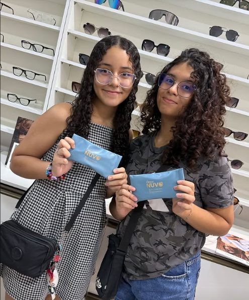
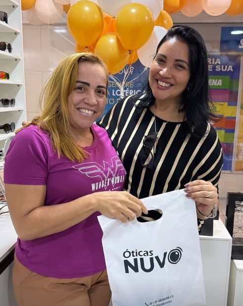
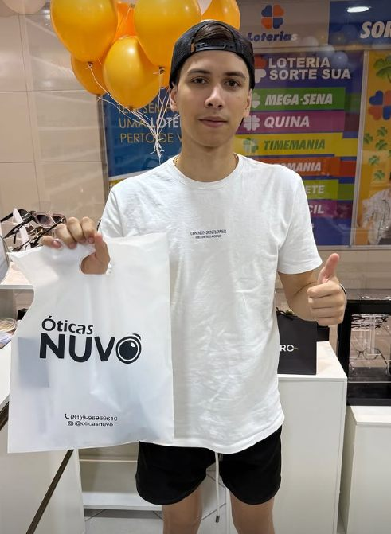
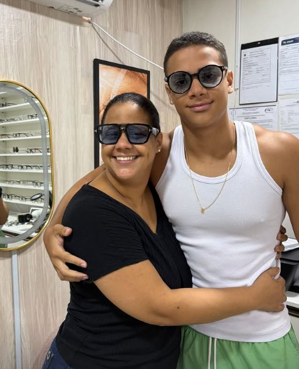
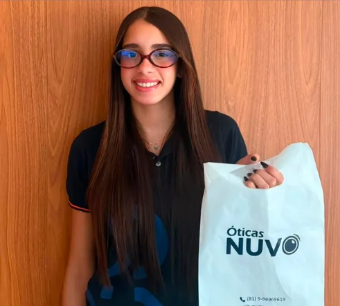
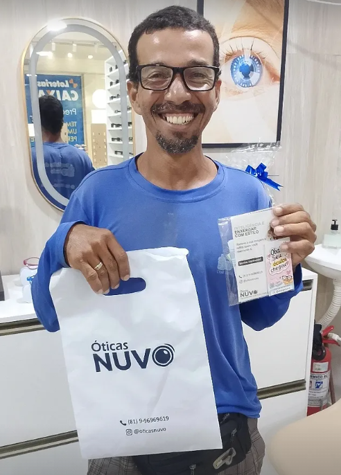
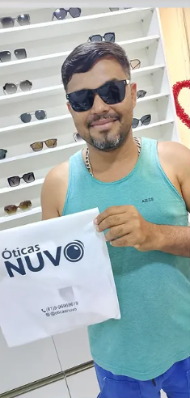

Visão simples
Para miopia, hipermetropia e astigmatismo. Leves, finas e com vários níveis de espessura.
Exame de vista, lentes sob medida e armações para todo estilo, tudo no mesmo lugar e com atendimento sem pressa.
Escolha uma aba para conhecer cada serviço.
Para miopia, hipermetropia e astigmatismo. Leves, finas e com vários níveis de espessura.
Longe, perto e intermediário na mesma lente, sem trocar de óculos a cada tarefa.
Diversos tipos de antirreflexo, filtro de luz azul e fotossensível.
Cores profundas, acabamento macio e muito conforto para o dia inteiro.
Hastes finas e resistentes, ideais para quem busca peso mínimo.
TR90 (nylon), aço inoxidável e alumínio — leves, duráveis e confortáveis.
Medição completa do grau, com tempo para tirar dúvidas sobre o resultado.
Identifica sinais que precisam de avaliação do oftalmologista.
Teste e orientação de uso para quem está começando com multifocais e garantia de adaptação pelo fornecedor
Lentes solares com seu grau ou modelos prontos para o dia a dia.
Bloqueio dos raios UVA e UVB para cuidar dos olhos no sol forte.
Menos reflexo na água, na estrada e no asfalto.
Escolha dia e horário pelo WhatsApp.
Medimos seu grau e conversamos sobre sua rotina.
Experimente armações e compare lentes com calma.
Avisamos quando ficar pronto e ajustamos no seu rosto.
Clientes reais, armações reais — e aquele brilho de enxergar bem.







Quer aparecer aqui? Marque @oticasnuvo na sua próxima foto.
Na Nuvo, cada indicação vem com o motivo. Você entende o que está levando, por que serve para o seu uso e quanto isso muda no seu dia.
Marcas consagradas que você encontra na loja.
Japoneses desde 1950. Automáticos, quartz e solares.
Brasileira há 60+ anos. Analógicos, digitais e ana-digi.
Design contemporâneo, caixas finas, pulseiras versáteis.

Não. Se você não tiver receita atual, te auxiliamos na marcação do exame.
Lentes simples costumam ficar prontas em poucos dias. Multifocais e tratamentos especiais levam um pouco mais. Informamos o prazo na hora.
Sim, aceitamos cartões, Pix e parcelamento. Consulte as condições na loja.
Podemos avaliar. Se a armação estiver em bom estado, montamos lentes novas nela.
Parceria com o consultório Optomais — Optometrista Fábio Eros atende em seu consultório para medir seu grau com calma e tirar todas as dúvidas.
Na Nuvo, você cuida da sua visão e ainda ganha um benefício especial! Na compra dos seus óculos completos (armação + lentes), você ganha um exame de vista inteiramente gratuito com a Optomais, nossa clínica parceira. Mais praticidade, economia e cuidado com a sua saúde visual, tudo em um só lugar!
Preencha e continue a conversa pelo WhatsApp.
Multishopping sul, loja 126
Jaboatão dos Guararapes, PE
Segunda a sexta, 08:30 às 17h
Sábado, 08:30h às 14h